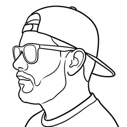

Los archivos se abren en Excel, Google Sheets o LibreOffice. También están los JSON originales: datos.json · resumen.json · historico.json. Fuentes: sistemas.asamblea.gob.pa y espaciocivico.org.
Suscríbete al feed RSS con tu lector favorito (Feedly, Inoreader, Thunderbird…) o con un servicio que lo convierta en correo, y entérate de cada proyecto nuevo, avance y ley sin entrar al sitio.
⚖ Comparar diputados
| # | Diputado ↕ | Partido ↕ | Provincia ↕ | Propuestos ↓ | Leyes ↕ | Autor → ley ↕ | Co-patr. → ley ↕ | Efectividad ↕ | Etapa frecuente |
|---|
Clasificados por palabras clave del título; un proyecto puede tener varios temas. Toca una barra para filtrar.
Planilla acumulada (B/.)
Calificación de Espacio Cívico (1–5), mismos diputados y mismo orden
Los valores de asistencia y calificación usan escala 1-5. La planilla corresponde al monto acumulado publicado por Espacio Cívico.
| Diputado ↕ | Planilla ↓ | Pleno ↕ | Comisiones ↕ | Participa en ↕ | Calificación ↕ | Provincia |
|---|
Cada fila es el partido del autor del proyecto; cada columna, el partido de los diputados que lo co-firmaron. El número es el porcentaje de las co-firmas que recibió ese partido. La celda con borde es su propio partido.
Cada proyecto cuenta una sola vez, para el partido de su autor principal (primer firmante), así los totales suman lo mismo que la tabla de diputados. "Participa en" cuenta los proyectos en que firmó al menos un diputado del partido, como autor o co-patrocinador.
Proyectos presentados por Ministerios e instituciones del Estado
Proyectos presentados por ciudadanos o personas naturales
Proyectos presentados por comisiones permanentes de la Asamblea Nacional
| # | Proyecto | Año | Etapa | Diputados | Costo estimado | vs promedio |
|---|
| # | Diputado | Planilla | Salario fijo | Salario acumulado | Meses | Costo acumulado | Participaciones | Costo / proyecto |
|---|
Cómo se construyen estos datos
Este observatorio reúne datos públicos y los cruza para responder preguntas simples: quién propone qué, cuánto avanza y cuánto cuesta. Aquí se explica de dónde sale cada número, qué decisiones se tomaron al calcularlo y qué limitaciones tiene. Si encuentras un error, escríbeme por cualquiera de las redes al pie de la página.
1. Fuentes y actualización
- Proyectos de ley: Seguimiento Legislativo de la Asamblea Nacional — ficha, fecha de presentación, título, etapa y lista de proponentes.
- Diputados: espaciocivico.org/diputados — nombre, foto, partido, circuito y suplente.
- Monitoreo: Espacio Cívico — planilla, asistencia a pleno y comisiones, calificación y comisiones a las que pertenece.
- Un proceso automático recoge los datos cada día a las 4:00 a. m. (hora de Panamá). Si una fuente falla o trae muchos menos registros que el día anterior, se conservan los últimos datos buenos y el sitio muestra un aviso.
2. Qué cuenta cada número
- Proyecto propuesto
- El diputado es el autor principal: el primer firmante en la lista de proponentes.
- Co-patrocinio
- El diputado firma un proyecto cuyo autor principal es otra persona.
- Participación
- Cualquiera de las dos anteriores. Un diputado cuenta una sola vez por proyecto, aunque firmen él y su suplente.
- Ley aprobada
- Proyecto en etapa "Ley". En los totales del diputado se atribuye solo a su autor principal.
- Autor → ley
- Leyes ÷ proyectos que propuso como autor principal.
- Co-patr. → ley
- Proyectos co-patrocinados que ya son ley ÷ proyectos co-patrocinados.
- Partidos y provincias
- Cada proyecto cuenta una vez, para el partido y la provincia de su autor principal, así los totales cuadran. "Participa en" cuenta los proyectos en que firmó al menos un diputado del grupo.
- Alianzas
- Diputados con los que más proyectos ha firmado alguien (como autor o co-patrocinador). En Partidos, el mapa "¿Quién se suma…?" muestra de qué partidos vienen las co-firmas de los proyectos de cada partido.
- Co-firmas con otros partidos
- Porcentaje de las veces que firmó junto a diputados de otro partido. Se compara con lo esperado si firmara al azar, que depende del tamaño de su partido (quien es el único de su bancada siempre tendrá 100 %).
- Tema
- Se asigna por palabras clave del título (15 temas, por ejemplo "Salud", "Tratados y relaciones exteriores" o "Conmemoraciones y festivales"). Un proyecto puede tener varios; si ninguna coincide queda en "Otros".
- Suplentes
- Lo que firma un suplente (
H.D.S) se suma al diputado principal al que suple, según el registro de suplencias de Espacio Cívico.
3. Índice de efectividad legislativa
Mide la capacidad de convertir proyectos en leyes. El porcentaje directo (leyes ÷ proyectos) engaña por dos razones, y el índice corrige ambas:
- Antigüedad. Un proyecto presentado hace pocos meses casi nunca es ley todavía. Por eso cada diputado se compara con las leyes que se esperarían según el semestre en que presentó cada proyecto (la tasa de la Cámara en ese semestre).
- Pocos datos. 1 ley de 3 proyectos (33%) no prueba nada. Se suman 1.5 leyes "virtuales" a las logradas y a las esperadas, lo que acerca al promedio los casos con poca información.
100 = promedio de la Cámara. ▲ 120 o más: sobre el promedio · ● entre 81 y 119: en el promedio · ▼ 80 o menos: bajo el promedio. Si se esperaba menos de 1 ley (proyectos pocos o muy recientes), se muestra como "pocos datos" en lugar de calificar.
Se calcula aparte como autor y como co-patrocinador, cada uno con su propia tasa base: sumarse a proyectos con muchas firmas tiene una tasa de éxito distinta a sacar adelante uno propio. El índice principal de la tabla es el de autor.
4. Cómo se relacionan los nombres
La Asamblea escribe el nombre completo ("H.D JORGE ISAAC BLOISE IGLESIAS") y Espacio Cívico el nombre corto ("Jorge Bloise Iglesias"). Se comparan palabras completas, sin tildes ni apodos, tolerando pequeñas diferencias de ortografía (Jhonatan / Jhonathan). Cuando un nombre podría corresponder a más de un diputado, no se asigna: es preferible dejar una firma fuera que atribuirla mal.
Las comisiones de la Asamblea se reconocen por su nombre oficial, aunque contenga comas.
5. Costo legislativo
- Planilla: saldo acumulado publicado por Espacio Cívico, tal cual.
- Salario fijo: B/. 7,000 por cada mes cerrado desde julio de 2024 hasta el último mes completo antes de la fecha de extracción.
- Por año: la planilla se reparte según los meses de cada año.
- Por proyecto: el costo anual de cada diputado se divide entre los proyectos en que participó ese año; el costo de un proyecto es la suma de las porciones de sus firmantes.
Es una estimación proporcional para comparar, no un costo contable: no incluye personal de apoyo, viáticos ni gastos de funcionamiento, y supone que el tiempo de cada diputado se reparte por igual entre sus proyectos.
6. Historial
Cada día se guarda una foto de las métricas de cada diputado en historico.json, para graficar tendencias en Monitoreo y en la ficha de cada diputado.
También se guarda la etapa de cada proyecto en etapas_historico.json. De ahí salen la pestaña Novedades, el feed RSS y el historial de etapas de cada proyecto. La fecha de cada cambio es el día en que se detectó, porque la Asamblea no publica cuándo ocurrió cada paso. El tiempo hasta ley solo se mide en leyes detectadas a menos de 7 días de ocurrir.
7. Limitaciones conocidas
- La planilla de Espacio Cívico se actualiza con poca frecuencia: puede pasar meses sin cambiar.
- El conteo histórico de proyectos por diputado anterior a octubre de 2026 no es comparable con el actual, porque cambió la forma de relacionar nombres; por eso la evolución solo muestra métricas de Espacio Cívico.
- El total de proyectos publicado por la Asamblea a veces baja de un día a otro (registros que se retiran o reclasifican). El observatorio refleja lo que la fuente publica.
- El primer firmante se toma como autor principal porque la fuente no indica el rol de cada firmante.
- Los temas salen solo del título: cerca de 1 de cada 5 proyectos queda en "Otros" porque su título solo dice qué ley modifica (por ejemplo "Que modifica la Ley 15 de 1995"), y algunos pueden caer en un tema por una palabra que no es central.
8. Datos abiertos
Todos los datos se pueden descargar en CSV desde la pestaña General o junto a cada tabla, y los archivos originales están disponibles: resumen.json, datos.json e historico.json. Puedes reutilizarlos citando la fuente.
